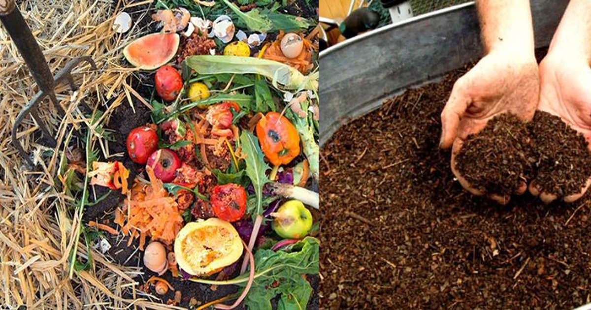

Benefit: Benefits of Composting. Enriches soil, helping retain moisture and suppress plant diseases and pests. It also reduces methane emissions from landfills and lowers your carbon footprint.

Benefit: Reuse provides an excellent environmentally-preferred alternative to other waste management methods because it reduces air and land pollution. Also it limits the need for new natural resources, such as timber.